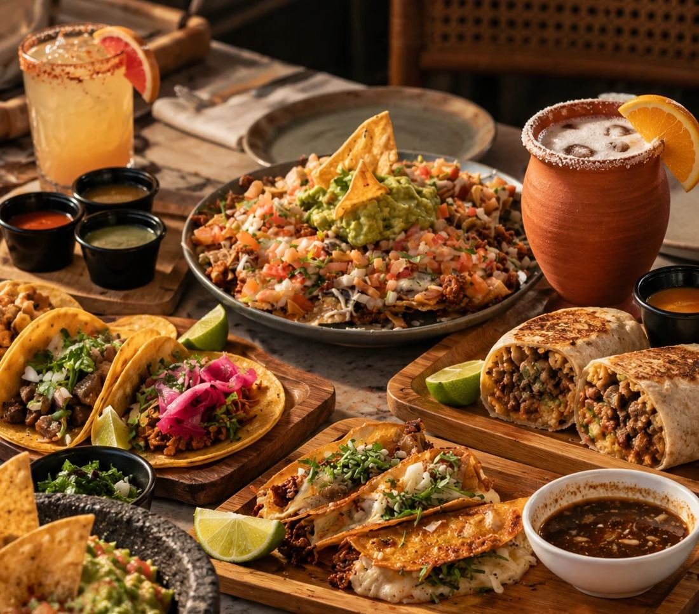
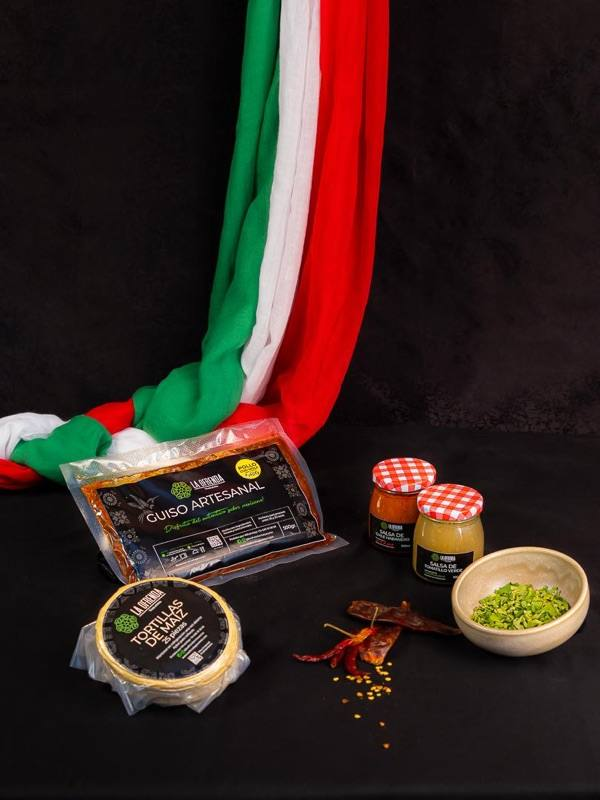
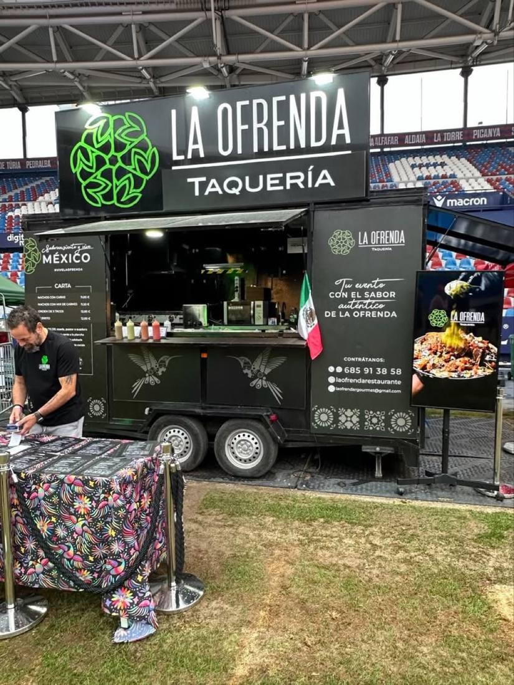
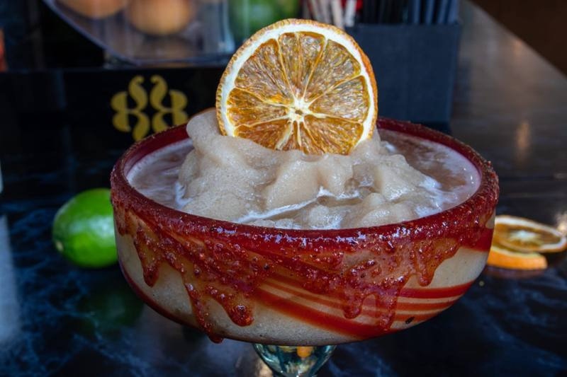

Ven a darle rienda suelta a tus emociones a través de los sentidos, recorre México acompañado del nuevo rostro de su gastronomía llena de vida, dándole un giro inesperado a la tradición.
Fácil y rápido

Mucho más que tacos
Tacos, burritos, guacamole, bebidas, cócteles y otras especialidades de la cocina mexicana. En La Ofrenda hay mucho más que tacos y chupitos: pide varios platillos, compártelos en la mesa y prueba de todo un poco.
Guía del agave
El tequila se disfruta. El mezcal se descubre. Conoce qué es cada uno, cómo se elabora y en qué se diferencian.
Destilado mexicano de agave azul, con denominación de origen. Las piñas se cuecen al vapor, por eso suele ser fresco y suave: herbal, cítrico o con notas dulces y de barrica según su estilo.
Se clasifica en blanco (sin reposo), reposado (de 2 a 12 meses en barrica), añejo y cristalino (envejecido y filtrado para quitarle el color).
Destilado mexicano de agave, sobre todo de Oaxaca. Se elabora con distintas variedades (espadín, tobalá, tepeztate…) y las piñas se cuecen en hornos de tierra con leña.
Por eso es más ahumado, mineral o terroso, y cada botella cambia según el agave, el origen y el maestro mezcalero.
La diferencia en una línea: el tequila se hace solo con agave azul y suele ser más suave y fresco; el mezcal admite muchas variedades de agave y suele ser más ahumado y complejo.


Productos envasados para preparar en casa
Llévate el auténtico sabor de La Ofrenda a casa. Carnitas, cochinita pibil, suadero, birria, barbacoa, pastor y pollo con mole en paquetes de 500 gr al vacío, con salsas y tortillas para preparar tus propios tacos: rinden para unos 20–25 tacos.
Se venden en paquetes para llevar y no forman parte de los ingredientes de los tacos del restaurante.

Barra de cócteles mexicanos
Margaritas clásicas y frozen de tamarindo o jamaica, micheladas y cantaritos para tu boda, cumpleaños, evento de empresa o festival.

Para llevar y a domicilio
Los pedidos por WhatsApp son solo para recoger en el local. Si ya estás en el restaurante, pide en caja.
Miércoles y jueves19:30 – 23:00 h
Viernes a domingo13:30 – 16:00 h19:30 – 23:00 h
 Descubrir más
Descubrir más